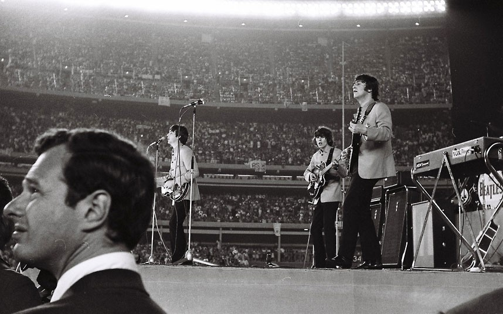
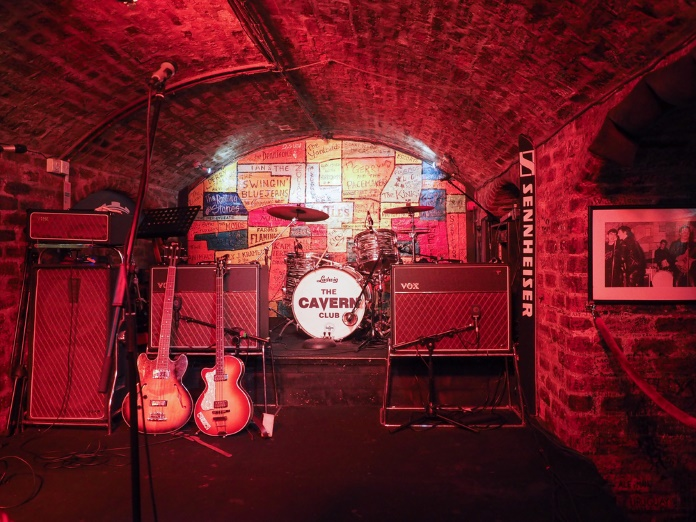
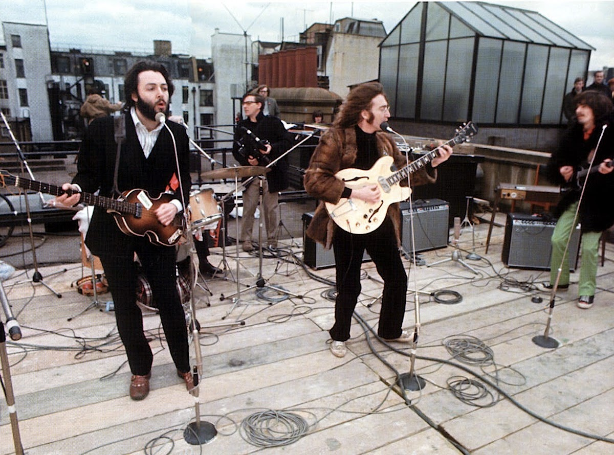

Shea Stadium - maior show dos Beatles
The Grand Shea Stadium foi onde ocorreu o maior evento da carreira dos Beatles. Eles foram os responsáveis por inaugurar um gigante estádio de beisebol americano, e não havia melhor maneira de fazer isso além de um belo show. O show foi um sucesso enorme, era possível ver com clareza alegria e química entre os participantes, também foi lá que a banda foi consquistou o record de bilheteria da época (55.500 vendas em poucas horas). Por conta desses fatores e muitos outros, este evento foi considerado o maior da carreira do grupo.

Cavern Club - lar do início de tudo
Cavern Club situado em Liverpool, é um dos vários clubes do Reino Unido, porém ganhou sua fama e espaço no coração dos fãs dos Beatles por ser o local onda a banda tocou suas priemiras músicas e realizou seus primeiros eventos. Foi neste local também que o grupo fez o maior número de apresentações, mais de 300 no total. Para desmonstrar o carinho pela banda, diversas pessoas fazem covers das músicas deles no local onde ficava os instrumentos originais dos Beatles.

Rooftop Concert - último show
Foi onde aconteceu o último show dos Beatles, em 30 de janeiro de 1969. O grupo decidiu fazer a apresentação no telhado da gravadora Apples Record, e por conta do show o local recebeu o apelido de "The Beatles Rooftop Concert" (o show de telhado dos Beatles em português). O evento foi gratuito, mas sem avisos prévios, então os populares que passavam por perto ouviam as músicas e iam apreciar de longe a banda, de forma curiosa. Agora o telhado do prédio se tornou um ponto de recordação para os fãs.

Daniel Oliveira ©Todos os direitos reservados